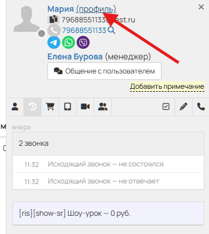
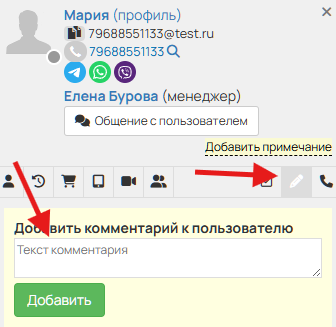

Как фиксировать касания, оставлять примечания и работать со сделками в CRM.
Каждое касание с родителем обязательно фиксируется в CRM через примечание. Примечания ставятся после каждого действия — независимо от результата.
Каждое примечание должно отражать:
Если звонок не состоялся — ставим статус НДЗ и номер попытки:
После третьего недозвона заявка переходит в «не выходит на связь» — оператор не тратит на неё время без дополнительных указаний.
Если разговор с родителем состоялся — указываем суть. Если записали на шоу-урок, фиксируем:
Если общение шло через текст:
Если родитель записался или перенёс урок:

